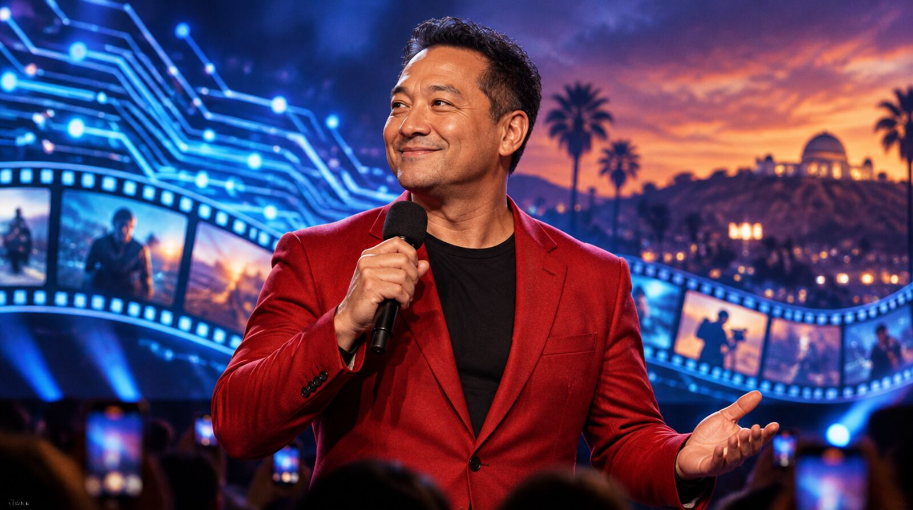
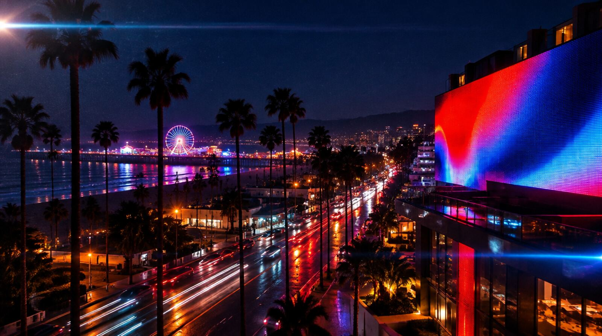
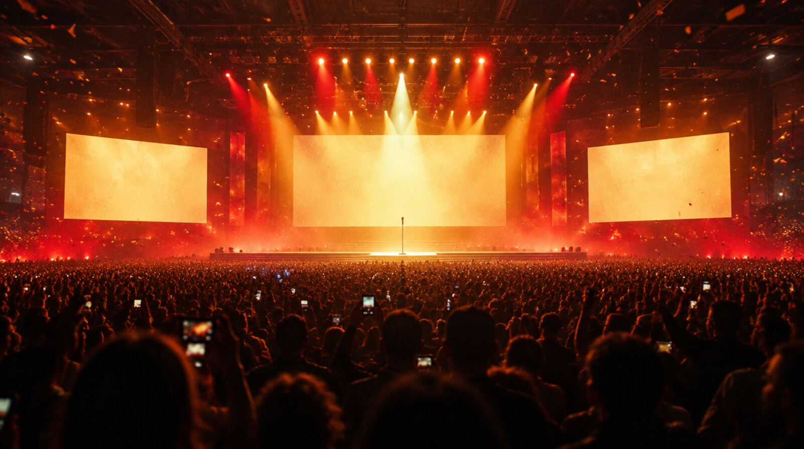
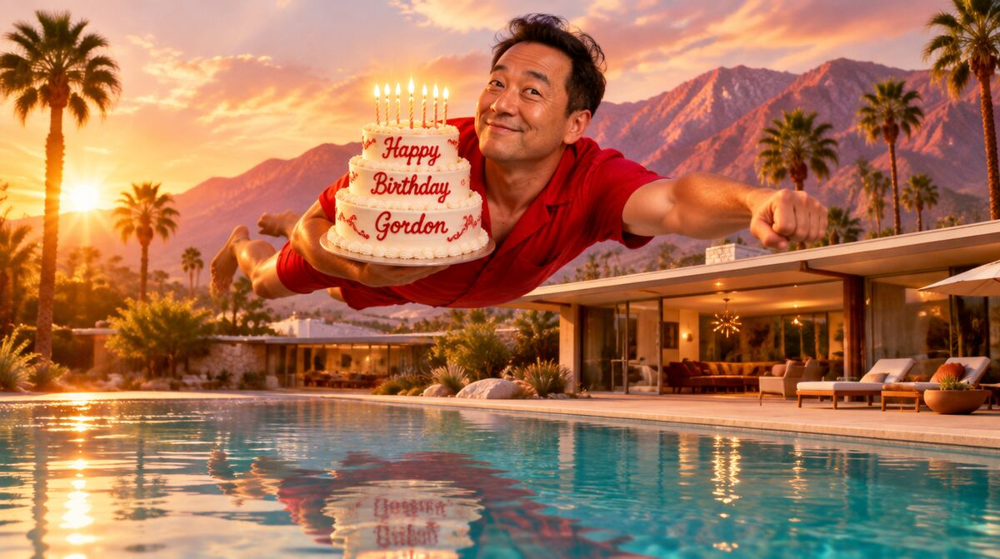
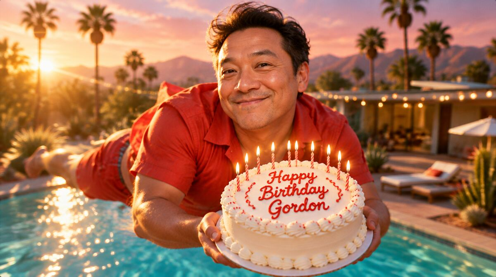

At a private Deadpool & Wolverine screening he met Kevin Feige and, on the spot, organized a fan photo with Lenore Zann, the voice of Rogue. His caption ended:
“Thanks Gordon!”

Los Angeles had no room where Hollywood and tech could meet. So he built one, and then he kept the lights on.
Digital LA founder and CEO◆Yale in Hollywood founder and president◆Silicon Beach Fest◆Kevins Assemble◆Degree Police, on duty◆Red Yale is happening◆Now showing: Palm Springs, Nov 6 to 8◆
01 · The Connector
He was at MySpace, and Los Angeles had no networking group for the people building digital, entertainment and startups. So Kevin started one.
Digital LA became the city's largest network for tech, startups and digital entertainment, with one or two events a week and a weekly newsletter at the center of it all. As of 2015, the newsletter and groups reached more than 50,000 people a week. Kevin is still its editor.
“So just go out and do it.”Kevin, Santa Monica Daily Press, 2014

Silicon Beach Fest · the 2014 edition
Founded by Kevin. Add a 25-startup showcase, ten parties, beach games and a Gadget Sandbox. In 2013 a Hollywood edition put startups and studios in one room for a day.
02 · The Arc
The path as his bios tell it, in order. No years printed. The Degree Police would want it that way.
Student council. He had already edited his high school paper and kept starting clubs.
Two Ivies, one very organized man.
Where you learn how a room really works.
Studio marketing meets the internet.
Integrated campaigns for movies, TV and games.
Started at MySpace. Still the editor of the weekly.
Five days of LA tech, with beach games.
A volunteer-run home for Yalies in entertainment, plus the global Yale in Hollywood Fest.
Also president of IVY Entertainment.
He schedules a talk at Berkeley College on how to get into Hollywood.
03 · The Fan
For Kevin, fandom is the ultimate networking event, and he always knows where the line forms.

“It was like our own personal Hall H.”
Kevins Assemble · August 2024At a private Deadpool & Wolverine screening he met Kevin Feige and, on the spot, organized a fan photo with Lenore Zann, the voice of Rogue. His caption ended:
“Thanks Gordon!”
At the Uncanny X-Men Experience with Adam:
“we both grew up with and love X-men and each other.”
Rival-Con report: It's like a comic con!
A red Marvel Rivals shirt at GamesBeat, a Spider-Man shirt at the Gaymer Awards. Gordon named it:
“Heated Marvel Rivalsry Era.”
Superfan. Watch party attendee. Present the night the episode's writer confirmed it's love.
Danced with a Unitree G1 robot until it chased him across the floor.
“Now G1 is chasing me! … I want to go viral! 😝”
Gordon, the moment he saw it:
“YOU are the X-man of fashion Vogue.”
04 · Case File
The Degree PoliceA noir short for the only man in LA who checks the diploma before the headshot.
05 · Kevin + Gordon
Highlights from the long run: every time one opens a door, the other walks through it.
Gordon was already reading Digital LA's newsletter blasts and RSVPing to its Video Game Marketing panel.
Kevin put Gordon on a Digital LA esports panel in Culver City. Kevin, after: You both rocked the panels!
Gordon: Look at you making Red Yale happen.
Kevin asked Gordon onto a stage. Gordon offered to moderate State of the Industry. Kevin: Added you.
Gordon got the pass. Kevin got his personal Hall H. Thanks Gordon!
Gordon: you are doing the most. Proud of you
Kevin introduced Gordon to Cassie Betts of Made in South LA, and Gordon pointed back to USC's Radical Play Lab.
Kevin judged GGP's Lovable buildathon. Gordon: We are proud Digital LA supporters.
Kevin: Sure I'll send it!
Kevin: Wanna invite Digital LA on a collab?
Both in the house. Kevin posted it: Yay Gordon and his students.
Gordon introduced Kevin to Theresa Loong, the new head of Yale CCAM, on AI. Kevin: Would love to!
Kevin: Good to c u Gordon at USC!
06 · Coming Attraction
Gordon's birthday weekend in Palm Springs, with Pride. Starring Kevin, in red, cake in hand.
Nov 6 to 8
Palm Springs · Come fly with us


07 · What's Next
No homework attached. Say yes to any, all, or none.
You asked for it in April: a collab invite, so you would not have to write the text or pick the graphic. The next one shows up finished, copy and graphic ready. You just tap accept.
Admit Digital LATheresa already said you should come talk. Your November trip to Yale could carry a Hollywood plus games plus AI conversation, with a USC Games voice beside yours.
Admit New HavenYour own 2024 topic list: games on screen, AI, diversity, the business. A Digital LA night at USC, Gordon moderating, as he offered in 2024, students on the panel and in the room, not just watching it.
Admit TrojansThe last word
“you are doing the most. Proud of you”Gordon, to Kevin, May 2025
With love from Gordon